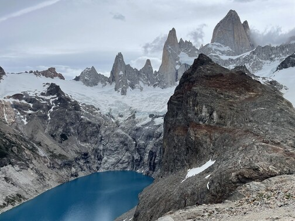
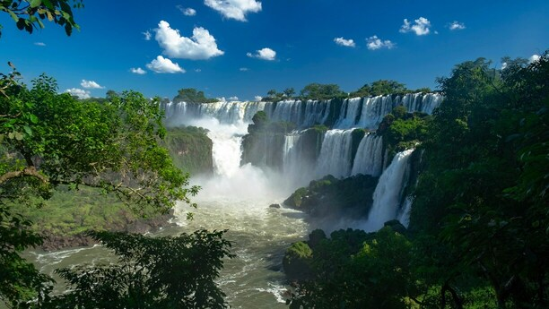
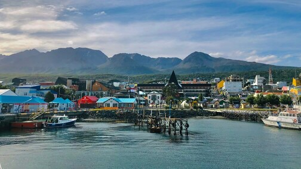
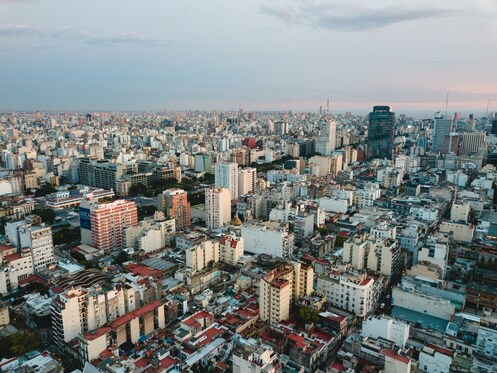

Argentine
Plongez dans l'aventure et explorez les merveilles de l'Argentine, un pays riche en diversité naturelle, culturelle et historique. De ses paysages spectaculaires, comme les chutes d'Iguazú et la Patagonie, à sa culture vibrante incarnée par le tango et le folklore, l'Argentine offre une expérience unique à chaque voyageur.
Que vous soyez passionné par l'aventure en plein air, la gastronomie, l'histoire ou les arts, l'Argentine a quelque chose à offrir à chacun. Préparez-vous à être émerveillé par la majesté des Andes, à déguster des vins exquis dans les vignobles de Mendoza, à vous imprégner de l'atmosphère animée de Buenos Aires, et à découvrir la chaleur et l'hospitalité de son peuple.
Notre guide complet vous aidera à planifier votre voyage en Argentine en vous fournissant des informations pratiques sur les lieux à visiter, les activités incontournables, les conseils de voyage, les formalités administratives et bien plus encore. Laissez-vous inspirer par la magie de l'Argentine et embarquez pour une aventure inoubliable dans ce pays fascinant.
 Carte d'identité
Carte d'identité
 Lieux à voir
Lieux à voir
 Itinéraire type
Itinéraire type
 Administratif
Administratif
10 CONSEILS POUR VOYAGER EN ARGENTINE

- Prévoyez des espèces (en dollars ou en euros) avant d’arriver dans le pays, car les frais bancaires sont élevés et il y a peu de paiements en carte bleue.
- Lorsque vous préparez votre itinéraire, ayez conscience des distances et des temps de trajet.
- Faites du stop ! Cela fonctionne bien et il y a plein de rencontres à la clef.
- Pour les longs trajets, privilégiez les bus de nuit qui sont très confortables.
- Apprenez les bases en espagnol. Les Argentins sont souvent ravis de partager une conversation (et un maté).
- Prenez votre temps ! Le pays est immense et il y beaucoup de choses à voir. Si vous êtes là pour deux semaines seulement, faites un choix entre le Nord et le Sud.
- Besoin d’aide pour choisir vos destinations ? Favorisez la Patagonie.
- Pour les amateurs de treks, équipez-vous ! L’Argentine est un magnifique terrain de jeu, mais attention la météo varie beaucoup d’une région à l’autre.
- Dans le Nord-ouest et en Patagonie, combinez votre visite avec la Bolivie et/ou le Chili.
- Louez une voiture pour découvrir par vous-même.
Le résumé

Population : 47 millions d'habitants
Monnaie : Peso argentin
Régime politique : République fédérale
Religion dominante : Catholicisme et protestantisme
Altitude min/max : 105m (Laguna del Carbon) - 6960 m (Cerro Aconcagua)
Température moyenne :
Sécurité des femmes et communauté LGBT+ :
Etat des routes et sécurité routière :
Expressions courantes :
Recommandations :
Carte d'identité
Contexte politique
Les années 1950 ont été dominées par le gouvernement du président Juan Perón et sa femme Eva. Le péronisme a été caractérisé par un mélange de nationalisme, de corporatisme et de politiques sociales en faveur des classes ouvrières et défavorisées.
En 1976, un coup d'État militaire a renversé le gouvernement démocratiquement élu. Cette dictature militaire nommée Processus de réorganisation nationale, a été marquée par de graves violations des droits de l'homme, y compris la disparition forcée de milliers de personnes. Les Grands-mères de la place de Mai est une organisation qui cherche a retrouver et rendre à leurs familles légitimes tous les enfants et bébés volés durant cette période et a ce que tous les responsables de ces crimes soient dûment sanctionnés.
La crise économique de 1998 déclenché en partie par la politique de convertibilité basée sur le dollar, plonge le pays dans une profonde instabilité politique et sociale. On note l'émergence du mouvement des ppiqueteros.
L’Argentine connait ensuite une alternance de gouvernement péroniste et conservateur. En 2018, le scandale des “cahiers de la corruption” révélé un vaste réseau de pots-de-vin et de corruption impliquant des responsables gouvernementaux, des entrepreneurs et des hommes d'affaires.
Lieux à visiter
El Chalten et le mont Fitz Roy
Situé en Patagonie, El Chalten est le point de départ pour explorer le majestueux massif du Fitz Roy. C'est un paradis pour les randonneurs avec des sentiers offrant des vues exceptionnelles sur les montagnes, les glaciers et les lacs. À voir : Randonnée, Alpinisme, Glaciers. Accessible en bus depuis El Calafate en 3 heures.
El Calafate et le glacier Perito Moreno
El Calafate, à proximité du glacier Perito Moreno, est une base idéale pour explorer la région. Les sentiers et les plates-formes d'observation offrent des vues spectaculaires sur ce glacier en mouvement constant. À voir : Randonnée, Glaciers, Croisière. Bus quotidien disponible depuis El Calafate vers le parc.

Les chutes d'Iguazú
Les chutes d'Iguazú, situées à la frontière entre l'Argentine, le Brésil et le Paraguay, offrent un spectacle naturel grandiose. Les visiteurs peuvent explorer les chutes depuis les côtés argentin et brésilien pour des perspectives uniques. À voir : Cascades, Randonnée, Bateau. Bus disponible depuis Puerto Iguazu vers le parc côté brésilien.
Ushuaia
Ushuaia, surnommée la "ville du bout du monde", offre une expérience unique entre montagnes, mer et faune marine. Les visiteurs peuvent explorer la ville, partir en expédition dans la nature environnante ou même entreprendre une expédition jusqu'en Antarctique. À voir : Randonnée, Faune marine, Glacier. Accessibles en bus depuis Punta Arenas au Chili ou Rio Gallegos en Argentine.
Buenos Aires
Buenos Aires, la capitale argentine, est une ville cosmopolite imprégnée d'histoire et de culture. Les visiteurs peuvent découvrir son architecture variée, sa gastronomie réputée et son ambiance festive, notamment en assistant à des spectacles de tango. À voir : Architecture, Gastronomie, Culture, Fête. Facilement accessible depuis différentes parties du pays.
Votre itinéraire parfait !
Explorez la ville en fonction de votre quartier d'hébergement choisi, que ce soit Palermo, Recoleta ou San Telmo. Profitez des premières impressions de la capitale argentine en visitant des lieux emblématiques tels que l'Avenida 9 de Julio, la Plaza de Mayo et la Casa Rosada.
Continuez à explorer Buenos Aires en découvrant davantage de quartiers et en vous imprégnant de la culture locale. Profitez d'un dimanche à San Telmo pour visiter son marché hebdomadaire et vous immerger dans son ambiance animée.
Poursuivez votre exploration de Buenos Aires en visitant des musées, des galeries d'art ou en dégustant la cuisine locale dans les nombreux restaurants de la ville. Profitez de la vie nocturne de la capitale argentine pour découvrir ses bars et ses clubs.
Quittez Buenos Aires et prenez un vol ou un bus pour Puerto Madryn, porte d'entrée de la péninsule Valdes. Installez-vous à Puerto Madryn et préparez-vous à découvrir la faune exceptionnelle de la région.
Passez la journée à explorer la péninsule Valdes, en observant les baleines depuis le littoral, en faisant des sorties en bateau ou en kayak, et en découvrant la diversité de la faune locale.
Continuez à explorer la péninsule Valdes en participant à des activités telles que des excursions terrestres ou maritimes pour observer les animaux dans leur habitat naturel.
Prenez un vol pour Ushuaia, la ville la plus australe du monde. Installez-vous à Ushuaia et profitez de l'après-midi pour vous promener dans la ville et découvrir ses attractions.
Participez à une excursion en bateau dans le canal de Beagle pour observer la faune marine et visiter l'ancienne prison et le musée maritime.
Explorez le parc national Tierra del Fuego lors d'une excursion d'une journée, en randonnant jusqu'à la Laguna Esmeralda ou en découvrant les sentiers de randonnée du parc.
Prenez un vol pour El Calafate, la porte d'entrée du glacier Perito Moreno. Installez-vous à El Calafate et profitez de l'après-midi pour vous détendre ou explorer la ville.
Passez la journée à visiter le glacier Perito Moreno, l'un des plus grands glaciers du monde. Vous pouvez choisir de rejoindre une excursion organisée ou de visiter le site par vous-même.
Prenez un bus pour El Chalten, une petite ville nichée au cœur du parc national des Glaciers. Installez-vous à El Chalten et profitez de l'après-midi pour vous promener dans la ville et vous imprégner de son atmosphère détendue.
Explorez le parc national des Glaciers depuis El Chalten en choisissant parmi les différentes randonnées disponibles. Optez pour une randonnée vers le mont Fitz Roy ou le Cerro Torre pour découvrir des paysages époustouflants.
Poursuivez votre exploration du parc national des Glaciers en effectuant une autre randonnée ou en participant à des activités telles que l'escalade ou le kayak. Profitez de la nature sauvage et des vues spectaculaires sur les glaciers.
Revenez à Buenos Aires pour votre vol de retour. Profitez de votre dernier jour dans la capitale argentine pour faire des achats de souvenirs, déguster des plats traditionnels dans un restaurant local ou simplement vous promener dans la ville.
La partie administrative
Types de visas
| Type de visa/autorisation | Durée maximum d’un séjour | Durée de validité | Prix | Prolongation possible |
|---|---|---|---|---|
| Exemption de visa | 90 jours | - | Gratuit | Oui |
| Visa Vacances-Travail | 1 an | 90 jours | Gratuit | Non |
Exemption de visa
Pour un séjour touristique d’une durée inférieure à 90 jours, les Français, les Belges, les Suisses et les Canadiens n’ont pas besoin de visa.
Un passeport valide durant la totalité du séjour suffit (au moins 6 mois après la date d’entrée en Argentine).
À votre arrivée dans le pays, l’agent des douanes à la frontière tamponne simplement votre passeport. Il vous autorise à rester jusqu’à trois mois en Argentine à compter de la date indiquée.
Prolongation d'exemption
Au-delà de 90 jours, ie moyen le plus simple pour renouveler votre exemption de visa reste de traverser une frontière. Faites simplement un aller-retour au Chili, au Brésil ou dans un autre pays frontalier (qui ne requiert pas de visa pour plus de facilité) et vous aurez une nouvelle autorisation de 90 jours pour séjourner en tant que touriste en Argentine.
Il est également possible d’obtenir une prolongation de séjour auprès des services d’immigration argentins. Cela peut être utile si vraiment vous ne pouvez pas passer de frontière (ou si vous êtes un grand fan d’administratif). Pour renouveler un visa touristique vous devez faire votre demande au plus tard 10 jours avant l’expiration de votre exemption de visa. Rendez-vous à la Direction Nationale de l’Immigration à Buenos Aires (Av. Antártida Argentina 1355 – ouvert de 8h à 14h, dans le bâtiment 4, secteur “Prorrogas”) ou dans un des bureaux annexes ailleurs dans le pays.
Vous devez payer les frais de renouvellement qui sont de 2 700 $ARS (environ 30 €) pour un visa touristique et présenter votre passeport valide pour la durée de prolongation du séjour (3 mois).
Frais bancaires
Lorsque vous retirez de l’argent, deux types de frais peuvent s’appliquer : ceux de votre banque française et ceux de la banque argentine dans laquelle vous retirez. En Argentine, ces derniers sont particulièrement exorbitants, alors comment les limiter au maximum ?
Où retirer ?
| Banque | Frais en pesos argentins | Frais en euros | Retrait max en pesos argentins | Retrait max en euros |
|---|---|---|---|---|
| Banco de la Nacion | 220 Pesos | 2,08 € | 4 000 Pesos | 38 € |
| Santa Cruz | 220 Pesos | 2,08 € | 4 000 Pesos | 38 € |
| Banco Provincia | 235 Pesos | 2,23 € | 4 000 Pesos | 38 € |
| Santander | 378 Pesos | 3,58 € | 4 000 Pesos | 38 € |
| Citybank | 385 Pesos | 3,65 € | 4 000 Pesos | 38 € |
| Banco Credicoop | 385 Pesos | 3,65 € | 4 000 Pesos | 38 € |
| Banco Ciudad | 385 Pesos | 3,65 € | 4 000 Pesos | 38 € |
| BVM Banco Masventas | 385 Pesos | 3,65 € | 4 000 Pesos | 38 € |
| BBVA | 385 Pesos | 3,65 € | 4 000 Pesos | 38 € |
| Banelco | 385 Pesos | 3,65 € | 4 000 Pesos | 38 € |
| Banco Patagonia | 385 Pesos | 3,65 € | 4 000 Pesos | 38 € |
| HSBC | 385 Pesos | 3,65 € | 4 000 Pesos | 38 € |
Comment limiter les frais
En Argentine, voir les gens faire la queue au distributeur n’est pas rare, et seulement quand ils ne sont pas vides… Surtout, il est impossible de trouver un distributeur qui ne prend pas des frais exorbitants, d’autant plus que leurs plafonds de retrait sont très bas.
Le minimum de frais que vous pourrez avoir est 5 % à la Banco de la Nacion avec un retrait maximum de 4 000 pesos. Dans les autres banques, les frais peuvent monter jusqu’à 15 %.
Une grande majorité de voyageurs utilisent la plateforme Western Union (Azimo, Moneygram, WorldRemit, SmallWorld ont également été citées) qui permet d’envoyer électroniquement de l’argent en Argentine et de le récupérer en liquide dans un bureau sur place. Malgré les frais appliqués il s’agit d’une solution avantageuse, car vous n’êtes pas limités dans le montant du transfert et le taux de change (proche de celui du marché noir) est en général bien meilleur (de 50 à 100 %) que le taux officiel appliqué aux distributeurs.
Nos conseils
- Arriver en Argentine avec des euros, des dollars ou des pesos chiliens et les changer sur place
- Ne pas hésiter à changer vos devises au taux du “blue market” (marché noir), il est beaucoup plus avantageux
- Le bureau de change de la Banco de la Nacion à l’aéroport de Buenos Aires échange les devises sans frais et à un taux intéressant
- Utiliser Western Union (Attention, les petits bureaux de quartiers ou ceux des supermarchés ne traitent pas les gros transferts)
Les vaccins
Avant de vous faire vacciner, assurez-vous dans votre carnet de santé que vous n’avez pas déjà reçu des injections pour des voyages antérieurs. Vérifiez également que vous êtes à jour de vos vaccins classiques : Diphtérie, Tétanos, Poliomyélite, Coqueluche, Hépatite B, Méningite, Rougeole, Oreillons, Rubéole et Covid.
Je vous conseille fortement d'aller visiter le site de l'Institut Paster qui donne les informationsà ce sujet en temps réel par pays ce qui est exactement votre besoin.
| Maladie | Mode de transmission | Recommandations de l’Institut Pasteur pour l’Argentine | Schéma vaccinal adultes | Enfants |
|---|---|---|---|---|
| Hépatite A | Eau et nourriture | Vaccin recommandé à tous les voyageurs | 1 injection au moins 15 jours avant le départ Rappel recommandé 6 à 12 mois après la première injection (en cas d’oubli, il peut être administré jusqu’à 3 à 5 ans après la première injection) Durée de protection : au moins 10 ans |
À partir de 1 an |
| Rage | Animaux infectés (chiens, chauve-souris…) | Vaccin non recommandé | 3 injections : la deuxième 7 jours après la première, la troisième 28 jours après la première | Dès qu’ils marchent |
| Tuberculose | Voie aérienne | Vaccin BCG recommandé aux enfants en cas de séjours répétés ou supérieurs à un mois. Il peut être fait jusqu’à 15 ans. | 1 injection | Dès la naissance |
| Typhoïde | Eau et nourriture | Vaccin recommandé aux voyageurs en cas de séjour long ou dans de mauvaises conditions | 1 injection 15 jours avant le départ Durée de protection : 3 ans |
À partir de 2 ans |
| Encéphalite japonaise | Moustiques | Vaccin non recommandé | 2 injections à 28 jours d’intervalle Rappel 12 à 24 mois après la première injection |
À partir de 2 mois |
| Encéphalite à tique | Tiques | Vaccin non recommandé | 3 injections : le deuxième 1 à 3 mois après la première, la deuxième 9 à 12 mois après la première | À partir de 1 an |
| Fièvre jaune | Moustiques | Vaccin recommandé uniquement près de la frontière avec le Paraguay pour les séjours de longue durée ou pour les voyageurs fortement exposés aux piqûres de moustiques. | 1 injection 10 jours avant le départ Durée de protection : à vie (sauf certains cas particuliers) |
À partir de 9 mois (entre 6 et 9 mois dans certains cas particuliers) |
Sources : Institut Pasteur, France Diplomatie, Hôpital Bichat, Vidal, MesVaccins.net, Center for Disease Control and Prevention et Fit for Travel
Contacts utiles
Ambassade d'Argentine à Paris
Adresse : 6 Rue Cimarosa, 75116 Paris
Téléphone : 01 44 05 27 00
Email : secon_efran@mrecic.gov.ar
Site Web : Site Web de l'Ambassade d'Argentine à Paris
Horaires d’ouverture : du lundi au vendredi de 9h à 14h, de 15h à 17h par téléphone
Ambassade d'Argentine à Bruxelles
Adresse : Avenue Louise 225, 1050 Bruxelles
Téléphone : +32 2 647 78 12
Email : ebelg@cancilleria.gob.ar
Site Web : Site Web de l'Ambassade d'Argentine à Bruxelles
Horaires d’ouverture : sur rendez-vous (à demander par mail consulares_ebelg@cancilleria.gob.ar)
Ambassade d'Argentine à Bern
Adresse : Jungfraustrasse 1, 3005 Bern
Téléphone : +41 31 356 43 43
Email : esuiz@mrecic.gov.ar
Site Web : Site Web de l'Ambassade d'Argentine à Bern